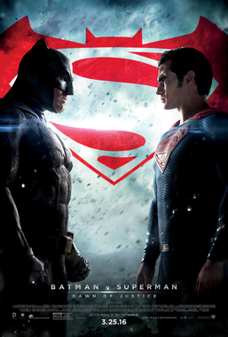

Sinopse
Após dois anos espreitando as ruas como Batman, Bruce Wayne se encontra nas profundezas mais sombrias de Gotham City. Com poucos aliados confiáveis, o vigilante solitário se estabelece como a personificação da vingança para a população.
Personagens
-
Batman
Ator: Robert Pattinson

-
Alfred
Ator: Andy Serkis

-
Charada
Ator: Paul Dano

-
Mulher Gato
Atriz: Zoë Kravitz
Outros Filmes do Batman:
-

O jovem Bruce Wayne viaja para o Oriente e recebe treinamento em artes marciais do mestre Henri Ducard, um membro da misteriosa Liga das Sombras. Quando Ducard revela que a verdadeira proposta da Liga é a destruição completa de Gotham City, Wayne retorna à sua cidade natal com o intuito de livrá-la de criminosos e assassinos. Bruce assume a persona de Batman, o Cavaleiro das Trevas, e conta com a ajuda do mordomo Alfred e do expert Lucius Fox.
-

Com a ajuda de Jim Gordon e Harvey Dent, Batman tem mantido a ordem na cidade de Gotham. Mas um jovem e anárquico criminoso, conhecido como Coringa, pretende testar o justiceiro e mergulhar a cidade em um verdadeiro caos.
-

O confronto entre Superman e Zod em Metrópolis fez a população mundial se dividir sobre a presença de extraterrestres na Terra. Enquanto muitos consideram Superman um novo deus, há aqueles que entendem ser extremamente perigosa a existência de um ser tão poderoso sem qualquer tipo de controle. Bruce Wayne é um dos que acreditam nesta segunda hipótese. Sob o manto de um Batman violento e obcecado, ele enfrenta Superman enquanto o mundo se pergunta que tipo de herói precisa.
-

Após testemunhar a morte brutal de seus pais quando criança, o milionário filantropo Bruce Wayne luta contra o crime na cidade de Gotham disfarçado do herói Batman, que coloca medo nos corações dos vilões. Mas quando um louco e deformado que se autointitula Coringa começa a controlar o submundo do crime em Gotham, Batman precisa encarar seu mais perverso inimigo para proteger sua identidade e a mulher que ama, a repórter Vicki Vale.